에너지관리기사 (2012-03-04 기출문제)
1과목: 연소공학
1. 고체 및 액체연료의 발열량을 측정할 때 정압 열량계가 주로 사용된다. 이 열량계 중에 2L의 물이 있는데 5g의 시료를 연소시킨 결과 물의 온도가 20℃ 상승하였다. 이 열량계의 열손실율을 10%라고 가정할 때의 발열량은 약 몇 cal/g인가?
- 4800
- 6800
- 8800
- 10800
(정답률: 61%)

2. 연소가스 중의 질소산화물 생성을 억제하기 위한 방법으로 틀린 것은?
- 2단 연소
- 고온 연소
- 농담 연소
- 배가스 재순환 연소
(정답률: 83%)
3. 전기식 집진장치에 대한 설명 중 틀린 것은?
- 포집입자의 직경은 30 - 50㎛ 정도이다.
- 집진효율이 90 ~ 99.9%로서 높은 편이다.
- 광범위한 온도범위에서 설계가 가능하다.
- 낮은 압력손실로 대량의 가스처리가 가능하다.
(정답률: 86%)
4. 다음 연소장치 중 연소부하율이 가장 높은 것은?
- 중요 연소 보일러
- 가스터빈
- 마폴로
- 미분탄 연소 보일러
(정답률: 70%)
5. 중유의 탄수소비가 증가함에 따른 발열량의 변화는?
- 감소한다.
- 증가한다.
- 무관하다.
- 초기에는 증가하다가 점차 감소한다.
(정답률: 80%)
6. 어떤 중요연소 가열로의 발생가스를 분석했을 때 체적비로 CO2 가 12.0%, O2 가 8.0%, N2 가 80%인 결과를 얻었다. 이 경우의 공기비는? (단, 연료 중에는 질소가 포함되어 있지 않다.)
- 1.2
- 1.4
- 1.6
- 1.8
(정답률: 59%)
7. 공기비 1.3에서 메탄을 연소시킨 경우 단열 연소온도는 약 몇 K인가? (단, 메탄의 저발열량은 49MJ/kg, 배기가스의 평균비 열은 1.29kJ/kg·K 이고 고온에서의 열분해는 무시하고, 연소 전 온도는 25℃ 이다.)
- 1663
- 1932
- 1965
- 2230
(정답률: 47%)
8. 가스시설에 대한 위험 장소의 분류에 속하지 않은 것은?
- 0종 장소
- 1종 장소
- 2종 장소
- 3종 장소
(정답률: 80%)
9. 다음 중 과잉 공기가 너무 많았을 때 발생하는 현상은?
- 연소속도가 빨라진다.
- 연소 온도가 높아진다.
- 보일러 효율이 높아진다.
- 배기가스의 열손실이 많아진다.
(정답률: 82%)
10. 부생(副生)가스 중 CH4 와 H2 가 주성분인 가스는?
- 수성가스
- 코크스로 가스
- 고로 가스
- 전로 가스
(정답률: 61%)
11. 어떤 연로의 성분이 다음과 같은 때 이론공기량[Sm3/kg]은?
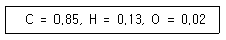
- 8.24
- 9.32
- 10.96
- 11.98
(정답률: 57%)
12. 액체연료 중 고온건류하여 얻은 타르계 중유의 특징에 대한 설명으로 틀린 것은?
- 화염의 방사율이 크다.
- 황의 영향이 적다.
- 슬러지를 발생시킨다.
- 단위 용적당의 발열량이 극히 적다.
(정답률: 75%)
13. 온도가 293K인 이상기체를 단열 압축하여 체적을 1/6로 하였을 때 가스의 온도는 약 몇 K 인가? (단, 가스의 정적비열(Cv)은 0.7kJ/kg·K, 정압비열 (Cp)은 0.98kJ/kg·K 이다.)
- 393
- 493
- 558
- 600
(정답률: 51%)
14. 석탄을 연료분석한 결과 다음과 같은 결과를 얻었다면 고정탄소분은 약 몇 % 인가?
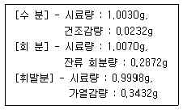
- 21.72
- 32.53
- 37.15
- 53.17
(정답률: 50%)
15. 메탄가스 8kg을 연소시키는데 소요되는 이론공기량은 약 몇 Sm3인가?
- 46
- 69
- 86
- 107
(정답률: 64%)
16. “압력이 일정할 때 기체의 부피는 온도에 비례하여 변한다.” 라는 법칙은 무슨 법칙인가?
- Boyle의 법칙
- Gay Lussac의 법칙
- Joule의 법칙
- Boyle-Charle의 법칙
(정답률: 80%)
17. 메탄의 반응식이 다음과 같은 때 총(고위) 발열량은 약 몇 kcal/Sm3 인가?
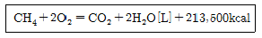
- 5720
- 9500
- 12300
- 16100
(정답률: 53%)
18. 액체연료에 대한 가장 적당한 연소방법은?
- 화격자연소
- 스토커연소
- 버너연소
- 확산연소
(정답률: 83%)
19. 연소온도에 영향을 주는 여러 원인 중 큰 변화가 없는 것은?
- 연료의 발열량
- 공기비
- 연소용 공기 중의 산소농도
- 연소효율
(정답률: 57%)
20. 어떤 굴뚝가스가 50mol% N2 , 20mol% CO2, 10mol% O2 와 나머지가 H2O인 조성을 가지고 있다. 이 기체 중 CO2 가스의 건기준의 몰분율은?
- 0.125
- 0.2
- 0.25
- 0.55
(정답률: 49%)
2과목: 열역학
21. 물의 삼중점(triple point)의 온도는?
- 0K
- 273.16℃
- 73K
- 273.16K
(정답률: 82%)
22. 30℃와 100℃ 사이에서 냉동기를 가동시키는 경우 최대의 성능계수(COP)는 약 얼마인가?
- 2.33
- 3.33
- 4.33
- 5.33
(정답률: 64%)
23. 그림의 열기관 사이크(cycle)에 해당하는 것은?
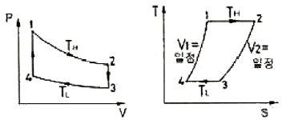
- 스털링(stirling)사이클
- 오토(otto)사이클
- 브레이튼(brayton)사이클
- 랭킨(rankine)사이클
(정답률: 55%)
24. 어느 과열증기의 온도가 325℃일 때 과열도를 구하면 약 몇 ℃인가? (단, 이 증기의 포화 온도는 495K 이다.)
- 93
- 103
- 113
- 123
(정답률: 68%)
25. 교축(throttling)과정을 전후하여 일반적으로 변화하지 않는 열역학적 양은?
- 내부에너지
- 엔탈피
- 엔트로피
- 압력
(정답률: 80%)
26. 100kPa, 20℃의 공기를 5kg/min의 유량으로 공기 압축기를 통과시켜 1000kPa 까지 등온 압축시킨다. 이 때 필요한 동력을 구하면? (단, 공기의 기체상수는 0.287kJ/kg·K 이다.)
- 16.1kW
- 77.3kW
- 450kW
- 900kW
(정답률: 44%)
27. 정압과정으로 5kg의 공기에 20kcal의 열이 전달되어 공기의 온도가 10℃에서 30℃로 올랐다. 이 온도 범위에서 공기의 평균 비열(kJ/kg·K)을 구하면?
- 0.152
- 0.321
- 0.463
- 0.837
(정답률: 47%)
28. 비열비 k=1.3이고 정적비열이 0.65kJ/kg·K이면 이 기체의 기체상수는 얼마인가?
- 0.195kJ/kg·K
- 0.5kJ/kg·K
- 0.845kJ/kg·K
- 1.345kJ/kg·K
(정답률: 55%)
29. 질량 m kg 의 어떤 기체로 구성된 밀폐계가 A kJ의 열을 받아 0.5A kJ 의 일을 하였다면, 이 기체의 온도변화는 몇 K 인가? (단, 이 기체의 정적비열은 CP kJ/kg·K, 정압비열은 CV kJ/kg·K 이다.)
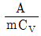
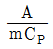
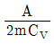
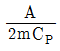
(정답률: 65%)
30. 엔탈피에 대한 설명 중 잘못된 것은?
- 열역학적으로 경로함수이다.
- 정압 과정에서는 엔탈피 변화량이 열량을 나타낸다.
- H = U + PV 로 정의된다.
- 이상기체의 엔탈피는 온도만의 함수이다.
(정답률: 56%)
31. CO2 50kg을 50℃에서 250℃로 가열할 때 내부에너지의 변화는 몇 kJ 인가? (단, 정적비열 Cv 는 0.67kJ/kg·K 이다.)
- 134
- 168
- 3200
- 6700
(정답률: 56%)
32. 30℃에서 150L의 이상기체를 20L로 가역 단열압축시킬 때 온도가 230℃ 로 상승하였다. 이 기체의 정적 비열은 약 몇 kJ/kg·K 인가? (단, 기체상수는 0.287kJ/kg·K 이다.)
- 0.17
- 0.24
- 1.14
- 1.47
(정답률: 57%)
33. 다음 중 랭킨사이클을 개선한 사이클은?
- 재열사이클
- 오토사이클
- 디젤사이클
- 사바테사이클
(정답률: 81%)
34. 저열원 10℃, 고열원 600℃ 사이에 작용하는 카르노사이클에서 사이클당 방열량이 3.5kJ 이면 사이클당실제 일의 양은 약 몇 kJ 인가?
- 3.5
- 5.7
- 6.8
- 7.3
(정답률: 40%)
35. 실제기체가 이상기체의 상태방정식을 근사적으로 만족시키는 조건으로 가장 관계가 먼 것은?
- 분자간의 인력이 작아야 한다.
- 압력이 낮아야 한다.
- 비체적이 커야 한다.
- 온도가 낮아야 한다.
(정답률: 53%)
36. 공기를 작동 유체로 하는 그림과 같은 Diesel cycle 의 온도 범위가 40~1000℃ 일 때 압축비는 약 얼마인가? (단, 비열비는 1.4, 최고압력 P2는 5MPa, 최저압력 P1는 100kPa 이다.)
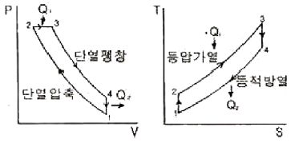
- 4.8
- 16.4
- 27.3
- 39.5
(정답률: 44%)
37. 엔트로피에 대한 설명으로 틀린 것은?
- 엔트로피는 분자들의 무질서도 척도가 된다.
- 엔트로피는 상태함수이다.
- 우주의 모든 현상은 총 엔트로피가 증가하는 방향으로 진행되고 있다.
- 자유팽창, 종류가 다른 가스의 혼합, 액체 내의 분자의 확산 등의 과정에서 엔트로피가 변하지 않는다.
(정답률: 70%)
38. 성능계수 3.4 인 냉동기에서 냉동능력 1kW 당 압축기의 구동 동력은 약 몇 kW 인가?
- 0.29
- 1.14
- 2.37
- 3.06
(정답률: 57%)
39. 냉동능력을 나타내는 단위로 0℃의 물을 24시간 동안에 0℃의 얼음으로 만드는 능력을 무엇이라 하는가?
- 냉동효과
- 냉동마력
- 냉동톤
- 냉동률
(정답률: 84%)
40. 체적 4m3, 온도 290K의 어떤 기체가 가역 단열 과정으로 압축되어 체적 2m3, 온도 340K로 되었다. 이상 기체라고 가정하면 기체의 비열비는 약 얼마인가?
- 1.091
- 1.229
- 1.407
- 1.667
(정답률: 55%)
3과목: 계측방법
41. 자기가열(自己加熱) 현상이 있는 온도계는?
- 열전대 온도계
- 압력식 온도계
- 서미스터 온도계
- 광고온계
(정답률: 65%)
42. 액주에 의한 압력측정에서 정밀측정을 위한 보정으로 적당하지 않은 것은?
- 모세관현상의 보정
- 높이의 보정
- 중력의 보정
- 온도의 보정
(정답률: 79%)
43. 다음 [보기]의 특징을 가지는 가스분석계는?
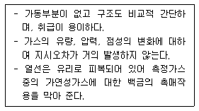
- 연소식 O2계
- 적외선 가스분석계
- 자기식 O2계
- 밀도식 CO2계
(정답률: 72%)
44. 기준입력과 주 피드백 신호와의 차에 의해서 일정한 신호를 조작요소에 보내는 제어장치는?
- 조절기(Controller)
- 전송기(transmitter)
- 조작기(actuator)
- 계측기(measuring meter)
(정답률: 69%)
45. 방사온도계로 흑체가 아닌 피측정체의 실제 온도 T를 구하는 식은? (단, E : 전방사에너지, E1 : 전방사율이다.)
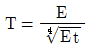
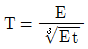
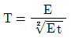
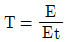
(정답률: 64%)
46. 냉접점의 온도가 0℃가 아닐 때 지시온도의 보정이 필요한 온도계는?
- 압력 온도계
- 광 고온계
- 열전대 온도계
- 저항 온도계
(정답률: 61%)
47. 방사온도계의 특징에 대한 설명 중 옳지 않은 것은?
- 방사물에 대한 보정량이 크다.
- 측정거리에 따라 오차발생이 적다.
- 발신기의 온도가 상승하지 않게 필요에 따라 냉각한다.
- 노벽과의 사이에 수증기, 탄산가스 등이 있으면 오차가 생기므로 주의해야 한다.
(정답률: 65%)
48. 0℃에서 저항이 80Ω이고 저항온도계수가 0.002인 저항온도계를 노 안에 삽입했더니 저항이 160Ω이 되었을 때 노안의 온도는 약 몇 ℃ 이겠는가?
- 160℃
- 320℃
- 400℃
- 500℃
(정답률: 45%)
49. 관로에 설치한 오리피스 전, 후의 차압이 1.936mmH2O일 때 유량이 22m3/h이었다. 차압이 1.024mmH2O이었을 때의 유량은 얼마인가?
- 15.4m3/h
- 16m3/h
- 25m3/h
- 28m3/h
(정답률: 57%)
50. 면적식 유량계(variable area flow meter)의 구성 장치로만 바르게 나열된 것은?
- 테이퍼관(taper tube), U자관
- U자관, 플로우트(float)
- 수평관, 조리개
- 테이퍼관(taper tube), 플로우트
(정답률: 67%)
51. 경유를 사용한 분동식 압력계의 사용압력(kg/cm2) 범위는?
- 40 ~ 100
- 100 ~ 300
- 300 ~ 500
- 500 ~ 1000
(정답률: 48%)
52. 다음 열전대 보호관 재질중 사용 온도가 가장 높은 것은?
- 유리
- 자기
- 구리
- Ni-Cr Stainless
(정답률: 72%)
53. 차압식 유량계에서 교측 상류 및 하류에서의 압력이 P1, P2 일 때 체적 유량이 Q1 이라면, 압력이 각각 처음보다 2배 만큼씩 증가했을 때의 Q2 는 얼마인가?
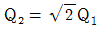
- Q2=2Q1
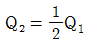
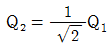
(정답률: 70%)
54. 열선식 유량계에 대한 설명으로 틀린 것은?
- 열선의 전기저항이 감소하는 것을 이용한 유량계를 열선풍속계라 한다.
- 유체가 필요로 하는 열량이 유체의 양에 비례하는 것을 이용한 유량계는 토마스식 유량계이다.
- 기체의 종류가 바뀌거나 조성이 변해도 정도가 높다.
- 기체의 질량유량을 직접 측정이 가능하다.
(정답률: 60%)
55. 유체의 와류에 의해 측정하는 유량계는?
- 오벌(Oval)유량계
- 델타(Delta) 유량계
- 로타리 피스톤(Rotary piston) 유량계
- 로터미터(Rotameter)
(정답률: 68%)
56. 액주식 압력계에 사용되는 액체의 구비조건이 아닌 것은?
- 점도가 적을 것
- 열팽창계수가 적을 것
- 모세관 현상이 클 것
- 화학적으로 안정할 것
(정답률: 82%)
57. 압력게이지에 나타내는 압력은 어느 것인가?
- 절대압력
- 대기압
- 절대압력 - 대기압
- 절대압력 + 대기압
(정답률: 71%)
58. CO, CO2, CH4를 함유한 어떤 기체를 분석시 Gaschromato-graphy 를 사용하여 그림과 같은 스트립 차트를 얻었다. 이들 3가지 물질에 대한 CO : CH4 : CO2의 몰분율비는?
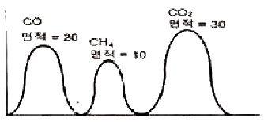
- 2 : 1 : 3
- 4 : 1 : 9
- 8 : 1 : 27
- 14 : 16 : 15
(정답률: 78%)
59. 적분동작(I동작)에 가장 많이 사용되는 제어는?
- 증기압력제어
- 유량압력제어
- 증기속도제어
- 유량속도제어
(정답률: 64%)
60. 다음 [보기]의 특징을 가지는 제어동작은?
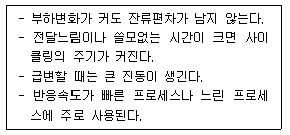
- PID 동작
- 뱅뱅동작
- PI 동작
- P 동작
(정답률: 71%)
4과목: 열설비재료 및 관계법규
61. 소성 가마 내의 열의 전열방법에 포함되지 않는 것은?
- 복사
- 전도
- 전이
- 대류
(정답률: 80%)
62. 인정검사 대상기기 조종자의 교육을 이수한 자의 조종범위에 해당되지 않는 것은?
- 용량이 3t/h인 노동 연관식 보일러
- 압력용기
- 온수를 발생하는 보일러로서 용량이 300kW 인 것
- 증기 보일러로서 최고사용 압력이 0.5MPa 이고 전열 면적이 9m2인 것
(정답률: 59%)
63. 에너지사용계획의 내용이 아닌 것은?
- 사업 일정
- 에너지 수급예측 및 공급계획
- 에너지이용 효율 향상 방안
- 사후 관리계획
(정답률: 61%)
64. 다음 중 대기전력 경고표지 대상 제품이 아닌 것은?
- 디지털 카메라
- 텔레비전
- 셋톱박스
- 유무선전화기
(정답률: 59%)
65. 두께 230mm의 내화벽돌, 114mm의 단열벽돌, 230mm의 보통벽돌로 된 노의 평면벽에서 내벽변의 온도가 1200℃이고 외벽면의 온도가 120℃일 때 노벽 1m2당 열손실은 매 시간당 약 몇 kcal 인가? (단, 벽돌의 열전도도는 각각 1.2, 0.12, 0.6kcal/m∙ h∙℃ 이다.)
- 376
- 563
- 708
- 1688
(정답률: 47%)
66. 다음 중 최고사용온도가 가장 낮은 보온재는?
- 폴리우레탄폼
- 페놀폼
- 펄라이트보온재
- 폴리에틸렌폼
(정답률: 70%)
67. 고 알루미나질 내화물의 특징에 대한 설명으로 틀린 것은?
- 중성내화물이다.
- 내식성, 내마모성이 적다.
- 내화도가 높다.
- 고온에서 부피변화가 적다.
(정답률: 70%)
68. 연소가스(화염)의 진행방향에 따라 요로를 분류한 것은?
- 연속식 가마
- 도영식 가마
- 직화식 가마
- 셔틀 가마
(정답률: 59%)
69. 다음 중 계속 사용검사에 해당하는 것은?
- 개조검사
- 구조검사
- 설치검사
- 운전성능검사
(정답률: 78%)
70. 보온재 시공시 주의하여야할 사항으로 가장 거리가 먼 것은?
- 사용개소의 온도에 적당한 보온재를 선택한다.
- 보온재의 연전도성 및 내열성을 충분히 검토한 후 선택한다.
- 사용처의 구조 및 크기 또는 위치 등에 적합한 것을 선택한다.
- 가격이 가장 저렴한 것을 선택한다.
(정답률: 84%)
71. 다음 강관의 표시기호 중 배관용 합금강 강관은?
- SPPH
- SPHT
- SPA
- STA
(정답률: 70%)
72. 감압밸브에 대한 설명으로 틀린 것은?
- 작동방식에는 작동식과 파일럿 작동식이 있다.
- 증기용 감압밸브의 유입측에는 안전밸브를 설치한다.
- 감압밸브를 설치할 때는 직관부를 호칭경의 10배으로 하는 것이 좋다.
- 감압밸브를 2단으로 설치할 경우에는 1단의 설정이 2단보다 높게 하는 것이 좋다.
(정답률: 68%)
73. 민간사업 주관자 중 에너지 사용 계획을 수립하여 지식경제부장관에게 제출하여야 하는 사업자의 기준은?
- 연간 연료 및 열을 2천 TOE 이상 사용하거나 전력을 5백만kwh 이상 사용하는 시설물 설치하고자 하는
- 연간 연료 및 열을 3천 TOE 이상 사용하거나 전력을 1천만kwh 이상 사용하는 시설을 설치하고자 하는
- 연간 연료 및 열을 5천 TOE 이상 사용하거나 전력을 2천만kwh 이상 사용하는 시설을 설치하고자 하는
- 연간 연료 및 열을 1만 TOE 이상 사용하거나 전력을 4천만kwh 이상 사용하는 시설을 설치하고자 하는
(정답률: 75%)
74. 연속식 가마로서 피열물을 정지시켜 높고 소성대의 바꾸어 가며 주로 벽돌, 기와 등의 건축 재료를 하는 가마는?
- 오름가마
- 꺾임불꽃식가마
- 터널가마
- 고리가마
(정답률: 68%)
75. 용광로에서 선철을 만들 때 사용되는 주원료가 아닌 것은?
- 규선석(珪線石)
- 석회석(石灰石)
- 철광석(鐵鑛石)
- 코크스(cokes)
(정답률: 66%)
76. 단열재, 보온재 및 보냉재는 무엇을 기준으로 분류 하는가?
- 열전도율
- 내화도
- 안전 사용온도
- 내압강도
(정답률: 77%)
77. 열전도율이 낮은 재료에서 높은 재료 순으로 된것은?
- 물 - 유리 - 콘크리트 - 석고보드 - 스티로폼 - 공기
- 공기 - 스티로폼 - 석고보드 - 물 - 유리 - 콘크리트
- 스티로폼 - 유리 - 공기 - 석고보드 - 콘크리트 - 물
- 유리 - 스티로폼 - 물 - 콘크리트 - 석고보드 - 공기
(정답률: 76%)
78. 다음 중 조직의 화학변화를 동반하는 소성, 기소를 목적으로 하는 로는?
- 고로
- 균열로
- 용해로
- 소성로
(정답률: 57%)
79. 에너지절약 전문기업의 등록 신청시 신청서 첨부 서류가 아닌 것은?
- 사업계획서
- 등기부등본(법인인 경우)
- 보유장비 명세서 및 기술인력명세서(자격증명서사본포함)
- 감정평가업자가 행한 자산에 대한 감정평가서(법인인 경우)
(정답률: 65%)
80. 최고사용압력(MPa)과 내용적(m3)을 곱한 수치가 0.004를 초과하는 압력용기 중 1종 압력용기에 해당되지 않는 것은?
- 증기를 발생시켜 액체를 가열하며 용기안의 압력이 대기압을 초과하는 압력용기
- 용기안의 화학반응에 의하여 증기를 발생하는 것으로 용기안의 압력이 대기압을 초과하는 압력용기
- 용기안의, 액체의 성분을 분리하기 위하여 해당 액체를 가열하는 것으로 용기안의 압력이 대기압을 초과하는 압력용기
- 용기안의 액체의 온도가 대기압에서의 비점을 초과 하지 않는 압력용기
(정답률: 66%)
5과목: 열설비설계
81. 저위발열량이 10000kcal/kg인 연료를 사용하고 있는 실제 증발량이 4t/h인 보일러에서 급수온도 40℃, 발생증기의 엔탈피가 650kcal/kg일 때 연료 소비량은 약 몇 kg/h 인가? (단, 보일러의 효율은 85%이다.)
- 251
- 287
- 361
- 397
(정답률: 59%)
82. 가스용접에서 사용하는 불꽃에 산소량이 많으면 어떤 결과를 가져오는가?
- 용접봉이 많이 소모된다.
- 아세틸렌이 많이 소비된다.
- 용착금속이 산화, 탈탄된다.
- 용제의 사용이 필요없게 된다.
(정답률: 75%)
83. 관 스테이의 최소 단면적을 구하려고 한다. 이 때 적용하는 설계 계산식은? (단, S : 관 스테이의 최소 단면적(mm2), A : 1개의 관 스테이가 지시하는 면적(cm2), a : A 중에서 관구멍의 합계 면적(cm2), P : 최고 사용 압력(kgf/cm2)이다.)
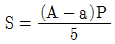
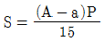
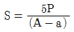
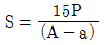
(정답률: 69%)
84. 판형 열교환기의 일반적인 특징에 대한 설명으로 틀린 것은?
- 구조상 압력손실이 적고 내압성은 크다.
- 다수의 파형이나 반구형의 돌기를 프레스 성형하여 판을 조합한다.
- 전열면의 청소나 조립이 간단하고, 고점도에도 적용할 수 있다.
- 판의 매수 조절이 가능하여 전열면적 증감이 용이 하다.
(정답률: 51%)
85. 보일러 연소량을 일정하게 하고 수요처의 저부하시 잉여증기를 축적시켰다가 급작한 부하변동이나 저부하 등에 대처하기 위해 사용되는 장치는?
- 탈기기
- 인젝터
- 어큐뮬레이터
- 재열기
(정답률: 80%)
86. 열교환기의 기본형을 크게 병류(parallel flow)형, 향류(counter flow)형, 직교류(cross flow)형으로 구분하여 같은 조건에서 비교할 때 온도효율의 크기를 옳게 나타낸 것은?
- 직교류 = 병류 = 향류
- 향류 ＞ 직교류 ＞ 병류
- 직교류 ＞ 병류 ＞ 향류
- 병류 ＞ 향류 ＞ 직교류
(정답률: 80%)
87. 증기 및 온수보일러를 포함한 주철 보일러의 경우 최고 사용 압력이 0.43MPa 이하일 경우의 수압시험압력은?
- 0.2MPa로 한다.
- 최고사용압력의 2.0배의 압력으로 한다.
- 최고사용압력의 2.5배의 압력으로 한다.
- 최고사용압력의 1.3배에 0.3MPa를 더한 압력으로 한다.
(정답률: 66%)
88. 향류 열교환기에서의 저온측의 온도효율 Ec를 옳게 나타낸 것은? (단, 아래 첨자 c는 저온측, 1은 입구, h는 고온측, 2는 출구를 나타낸다.)(오류 신고가 접수된 문제입니다. 반드시 정답과 해설을 확인하시기 바랍니다.)
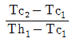
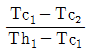
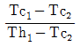
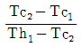
(정답률: 39%)
89. 다음 [그림]과 같이 열전도계수 K가 25W/m·℃인 중공구(中空球)가 있다. 이 때 온도는 ri가 3cm일 때 Ti은 300K, ro가 6cm일 때 To는 200K로 나타났다. 중공구를 통한 열이동량은?
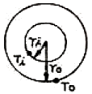
- 177W
- 1885W
- 1993W
- 2827W
(정답률: 50%)
90. 증기실 부하를 600m3/m3·h로 할 때 증기압력 45kg/cm2·g 증발량 60t/h의 수관보일러의 기수드럼의 증기부의 용적은 얼마인가? (단, 45kg/cm2·g의 포화증기의 비체적은 0.044m3/kg이다.)
- 4.4m3
- 15.84m3
- 26.4m3
- 100m3
(정답률: 42%)
91. 지름이 d, 두께가 t인 얇은 살두께의 원통안에 압력 P가 작용할 때 원통에 발생하는 길이방향의 인장응력은?
- πdP/4t
- πdP/t
- dP/4t
- dP/2t
(정답률: 62%)
92. 용량이 몇 t/h 이상의 증기보일러에 수질관리를 위한 급수처리 또는 스케일 부착 방지나 제거를 위한 시설을 하여야 하는가?
- 0.5
- 1
- 3
- 5
(정답률: 62%)
93. 벤졸의 혼합액을 증류하여 매시 1000kg의 순 벤졸을 얻은 정류탑이 있다. 그 환류비는 2.5이다. 이 정류탑의 환류비가 1.5로 되었다면 1시간에 몇 kcal의 열량을 절약할 수 있는가? (단, 벤졸의 증발열은 95kcal/kg 이다.)
- 950kcal
- 9500kcal
- 95000kcal
- 950000kcal
(정답률: 62%)
94. 노통보일러에 있어 원통 연소실 또는 노통의 길이 이음에 가장 적합한 용접방법은?
- 필릿용접
- 플러그용접
- 맞대기 양쪽 용접
- 비트용접
(정답률: 71%)
95. 다음 중 사이폰 관(siphon tube)과 관련이 있는 것은?
- 수면계
- 안전밸브
- 압력계
- 어큐뮬레이터
(정답률: 70%)
96. 송풍기의 출구 풍압을 h(mmAq), 송풍량을 V(m3/min), 송풍기 효율을 (η)으로 표기하면 송풍기 마력[N]은 어떻게 표시되는가?
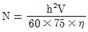
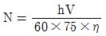
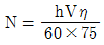
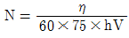
(정답률: 71%)
97. 보일러 급수 중에 함유되어 있는 칼슘(Ca) 및 마그네슘(Mg)의 농도를 나타내는 척도는?
- 탁도
- 경도
- BOD
- pH
(정답률: 77%)
98. 이중관 열교화기(double-pipe heat exchanger)중 병류식 단류 교환기를 향류식과 비교할 때의 설명으로 옳지 않은 것은?
- 전열량이 적다.
- 일반적으로 거의 사용되지 않는다.
- 한 유체의 출구 온도가 다른 유체의 입구온도까지 접근이 불가능하다.
- 전열면적이 많이 필요하다.
(정답률: 57%)
99. 소형 보일러를 옥내에 설치시 보일러 외측으로부터 보일러실 벽과의 거리는 얼마 이상이어야 하는가?
- 0.1m
- 0.3m
- 0.45m
- 0.6m
(정답률: 73%)
100. 육용강제 보일러에서 동체의 최소 두께에 대하여 옳지 않게 나타낸 것은?
- 안지름이 9mm 이하의 것은 6mm (단, 스테이를 부착할 경우)
- 안지름이 900mm 초과 1350mm 이하의 것은 8mm
- 안지름이 1350mm 초과 1850mm 이하의 것은 10mm
- 안지름이 1850mm 초과시 12mm
(정답률: 78%)
2000g × 20℃ × 1 cal/g℃ = 40000 cal
하지만, 이 열량계는 열손실이 10% 발생한다고 가정했으므로, 실제 발생한 열량은 다음과 같다.
40000 cal ÷ (1 - 0.1) = 44444.44 cal
따라서, 시료 1g당 발생한 열량은 다음과 같다.
44444.44 cal ÷ 5g = 8888.89 cal/g
이 값은 보기 중에서 "8800"과 가장 가깝기 때문에 정답은 "8800"이다.